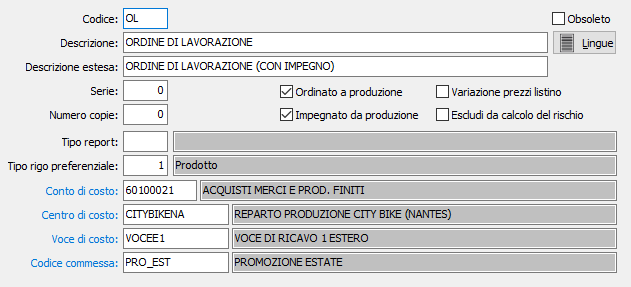

Causali ordini terzisti
Le causali ordini vengono utilizzate al momento dell’inserimento di un ordine terzista e determinano il tipo di documento da emettere.
E’ possibile gestire più causali di ordini, e più numerazioni progressive (serie). In funzione dei flags e dei parametri indicati, una causale di ordine può attivare o meno l’aggiornamento dell’ordinato e dell'impegnato per produzione e così via.

CODICE: Codice alfanumerico di 3 caratteri, a libera scelta dell'utente, per individuare la causale attiva. Sul campo sono attive le funzioni di ricerca (F9) sulla tabella stessa.
OBSOLETO: flag attivabile dall’utente per inibire il possibile utilizzo dell’elemento di tabella in esame nelle successive transazioni.
DESCRIZIONE: Campo alfanumerico di 30 caratteri per inserire la descrizione della causale attiva. Questa descrizione viene stampata sui documenti se il programma di stampa lo prevede.
LINGUE: bottone che attiva la tabella di memorizzazione della descrizione in esame nelle varie lingue utilizzate dall’utente.
DESCRIZIONE ESTESA: Campo alfanumerico di 60 caratteri per inserire la descrizione estera della causale attiva ad uso interno dell’utente. Questa descrizione non viene stampata sui documenti ma viene visualizzata nelle viste.
SERIE: Campo numerico per inserire il numero di serie del documento. Ciascuna serie attiva una propria numerazione di documenti. E’ necessario, in fase di immissione del documento, per proporre automaticamente e correttamente il numero progressivo del documento acquisito dalla tabella protocolli.
NUMERO COPIE: Indicare il numero di copie da stampare, se zero saranno stampate le copie previste sull'anagrafica del cliente.
ORDINATO A PRODUZIONE: Flag per abilitare la gestione dell’ordinato a produzione. La presenza della spunta determina l’aggiornamento dell’ordinato a produzione da parte della causale attiva. In caso contrario, l’aggiornamento non viene effettuato. Il campo è visibile se non è presente il modulo di produzione.
IMPEGNATO DA PRODUZIONE: Flag per abilitare la gestione dell’impegnato da produzione. La presenza della spunta determina l’aggiornamento dell’impegnato da produzione da parte della causale attiva. In caso contrario, l’aggiornamento non viene effettuato. Il campo è visibile se non è presente il modulo di produzione.
VARIAZIONE PREZZI LISTINO: definisce se dai documenti emessi con questa causale è consentito modificare i prezzi di listino in base a quanto definito sull'anagrafica dell'intestatario (casella con segno di spunta).
Escludi da calcolo del rischio: Se presente la spunta i documenti emessi con la causale non saranno considerati nel calcolo del rischio (esclusi dal monte ordini). Se il parametro di configurazione "Gestione saldi clienti/fornitori" è impostato su "Gestione automatica", la variazione del flag sulla causale causerà, al momento del salvataggio, un immediato aggiornamento dei valore del monte ordine di tutti i documenti aperti; se il parametro di configurazione "Gestione saldi clienti/fornitori" è impostato a "Nessuna gestione", il campo è disabilitato e se si modifica la causale, al salvataggio, viene azzerato.
TIPO REPORT: consente di specificare un tipo di report specifico per i documenti che saranno emessi utilizzando questa causale. Sul campo sono attive le funzioni di ricerca (F9).
TIPO RIGO PREFERENZIALE: Indica il tipo rigo da proporre in fase di emissione dell'ordine. Sul campo sono attive le funzioni di ricerca (F9).
CONTO DI COSTO: eventuale codice alfanumerico di 8 caratteri, presente in piano dei conti, per definire il sottoconto contabile di costo a cui verrà associato il rigo del documento. Sul campo sono attive le funzioni di ricerca (F9) e manutenzione (CTRL+W) sulla tabella stessa.
CENTRO DI COSTO: campo significativo solo in presenza del modulo Contabilità analitica opportunamente configurato. Può contenere un codice alfanumerico di 15 caratteri, per definire il centro di costo a cui verrà associato il rigo del documento. Sul campo sono attive le funzioni di ricerca (F9) e manutenzione (CTRL+W) sulla tabella stessa.
VOCE DI COSTO: campo significativo solo in presenza del modulo Contabilità analitica opportunamente configurato. Può contenere un codice alfanumerico di 15 caratteri, per definire la voce di costo a cui verrà associato il rigo del documento. Sul campo sono attive le funzioni di ricerca (F9) e manutenzione (CTRL+W) sulla tabella stessa.
COMMESSA: campo significativo solo in presenza del modulo Contabilità analitica opportunamente configurato. Può contenere un codice alfanumerico di 15 caratteri, per definire la commessa a cui verrà associato il rigo del documento. Sul campo sono attive le funzioni di ricerca (F9) e manutenzione (CTRL+W) sulla tabella stessa.